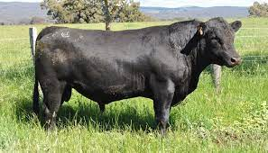
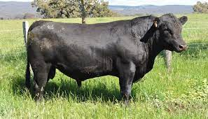

The Aberdeen Angus, sometimes simply Angus, is a Scottish breed of small beef cattle. It derives from cattle native to the counties of Aberdeenshire and Angus in north-eastern Scotland. The Angus is naturally polled and solid black or red, though the udder may be white.
One of the first cattle breeds bred exclusively for beef production. Angus cattle are highly prized for beef production because they yield especially tender and flavorful meat due to a natural disposition to marbling. Cattle breeds carry their fat in two ways: in a thick outer layer (not unlike ducks) or marbled (in tiny specks/strips) throughout their meat.
| COMMERCIAL | MONTHS | AVERAGE | HIGHEST | STOCK AVAILABLE |
|---|---|---|---|---|
| Cow in Calf | 3 | R 8 000 | R 15 000 | 25 |
| Cow + Calf | 3 | R 11 000 | R 16 750 | 10 |
| Heifer | 5 | R 11 500 | R 18 400 | 10 |
| Heifer in Calf | 48 | R 11 200 | R 21 000 | 9 |
 
